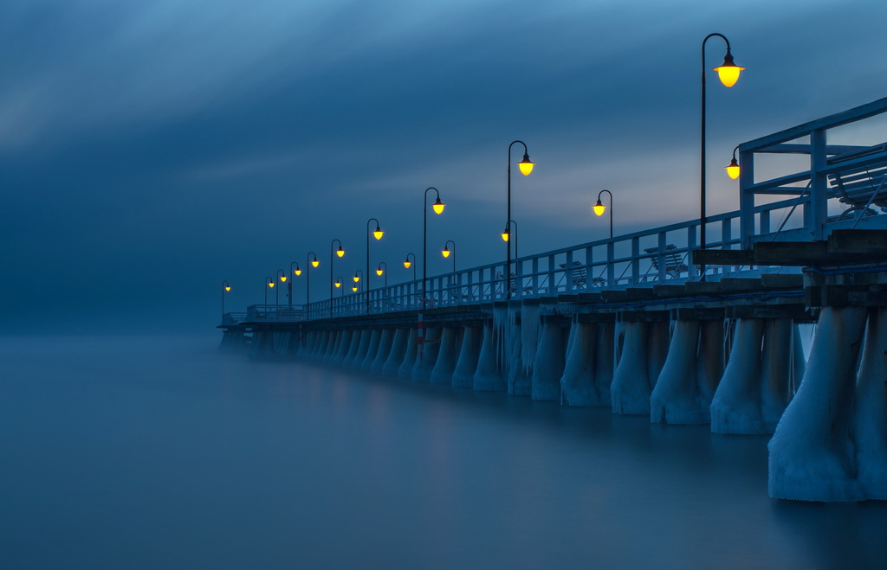
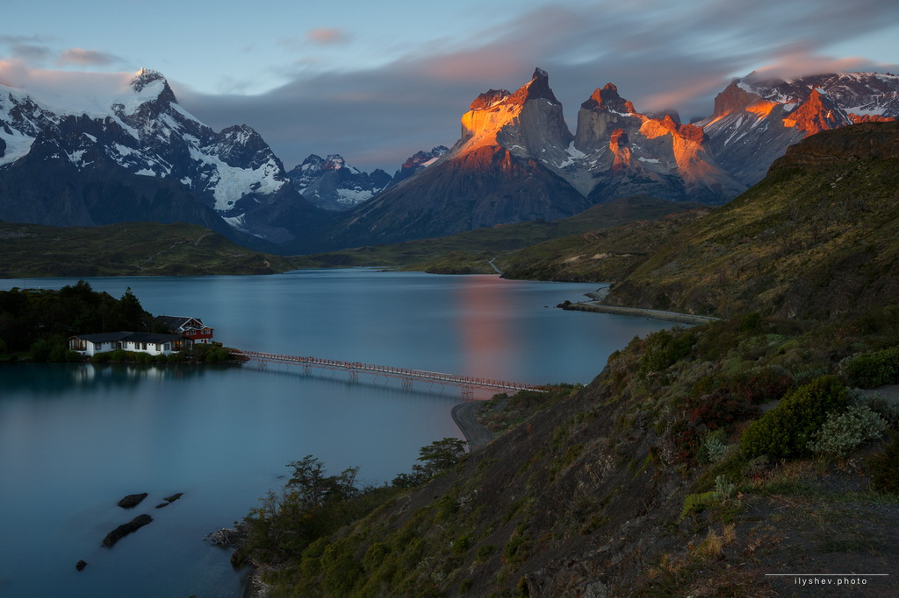

The Sopot Pier (Polish: Molo w Sopocie) - the pier in the city of Sopot, built as a pleasure pier and as a mooring point for cruise boats, first opened in 1827. At 511.5m, the pier is the longest wooden pier in Europe. (You can change this article)

Pier in Sopot, Gdansk
From Chile with love
Torres del Paine National Park (Spanish: Parque Nacional Torres del Paine) is a national park encompassing mountains, glaciers, lakes, and rivers in southern Chilean Patagonia. The Cordillera del Paine is the centerpiece of the park. It lies in a transition area between the Magellanic subpolar forests and the Patagonian Steppes.

Torres del Paine National Park, Chile
This section just with text
Pier in Sopot
The first pier was built in , next rebuilt to the length of 150 metres, then to 315 m. It was brought to the contemporary length in 1928, along with the walking passage of the spa. The first non-wooden elements appeared after 1990, when the head was modernised using steel elements. Nowadays the pier is a grade I listed building.
Torres del Paine National Park
The park is one of the 11 protected areas of the Magallanes Region and Chilean Antarctica (together with four national parks, three national reserves, and three national monuments). Together, the protected forested areas comprise about 51% of the land of the region (6,728,744 hectares).